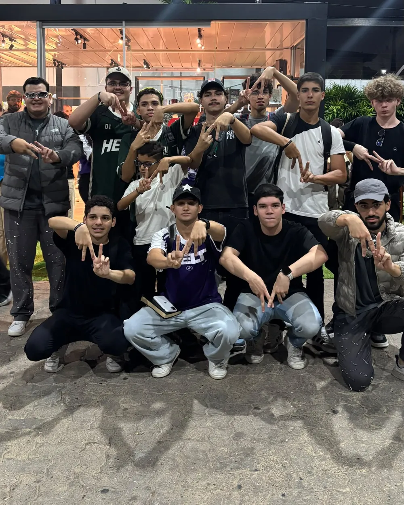
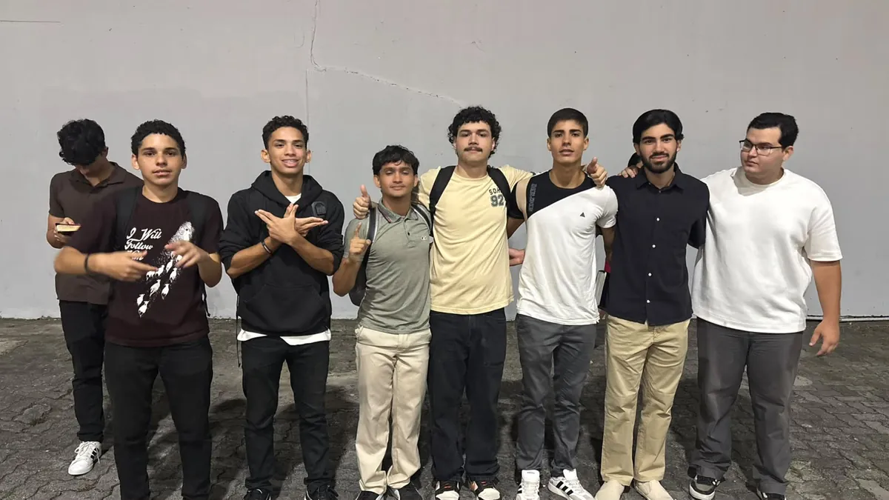
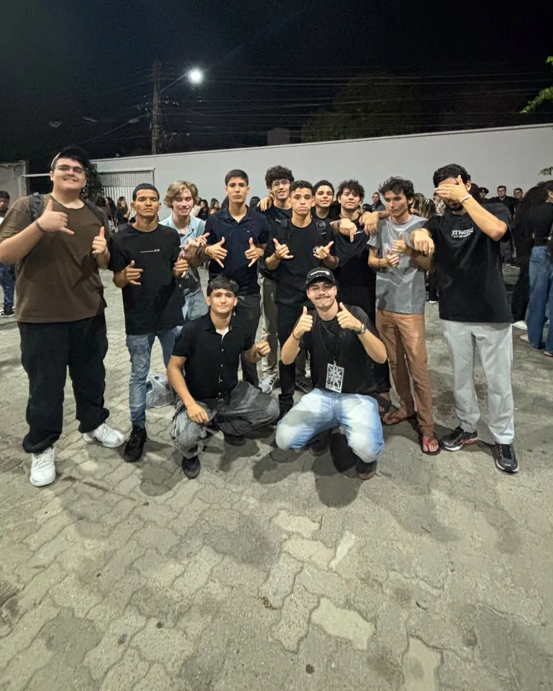
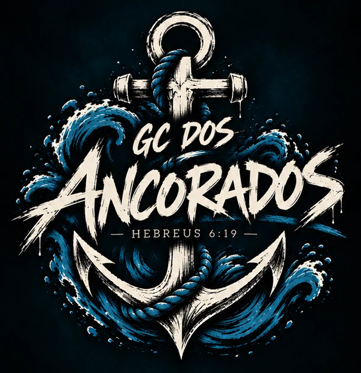

Grupo de crescimento · 15 a 17 anos
GC Ancorados
Adolescentes que se encontram todo sábado. Aqui tem louvor, papo reto sobre a Bíblia, amizade de verdade e muita resenha.
GC · todo sábado
14h30
Culto · todo domingo
17h00
CC Videira Sul

Sobre o GC
O GC Ancorados é o grupo de crescimento de adolescentes de 15 a 17 anos do ministério de jovens A13, da CC Videira Sul.
Somos um grupo que decidiu lançar âncora em Jesus. Não importa a maré: a gente segura junto. Ninguém navega sozinho.
Se você tem de 15 a 17 anos e quer fazer parte, chama a gente.
“Temos esta esperança como âncora da alma, firme e segura.”
Hebreus 6:19


Todo sábado, às 14h30
O que rola no GC
É isso que a gente faz juntos.
- Louvor
- Papo reto sobre a Bíblia
- Amizade de verdade
- Muita resenha
Para quem está chegando pela primeira vez
O GC é para adolescentes de 15 a 17 anos.
Pra saber onde o encontro de sábado vai acontecer, chama a gente no WhatsApp. Pais e responsáveis também podem falar direto com o GC por lá: (85) 98799-0440.
Falar com o GCGC Ancorados · todo sábado
14h30
O local você recebe falando com a gente no WhatsApp.
Culto · todo domingo
17h00
CC Videira Sul.
Vamos conversar?
Chama a gente no WhatsApp. Se quiser ver mais do GC, tem também o Instagram.
